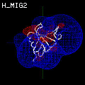
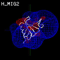
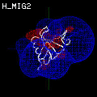
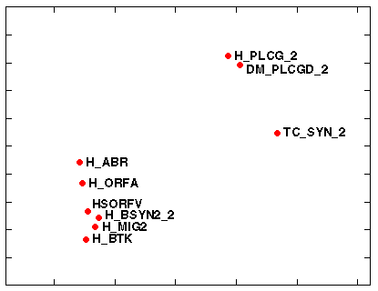

generated using GRASP, by N.Blomberg, selected and reduced by R.Gabdoulline.
Small cluster:
Large cluster:

Here is a view of distribution of the proteins in projection to 2 dimensional electrostatic property space, which is derived from the similarity matrix, computed by PIPSA:
